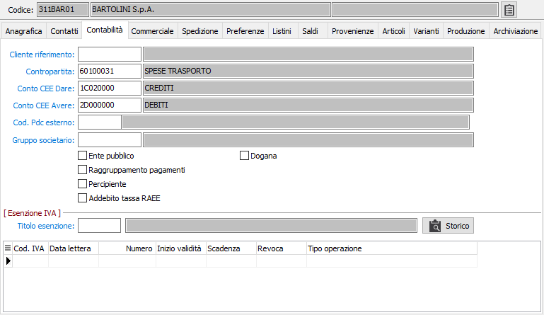

Contabilità
La sezione video contiene, tra le altre, informazioni relative all’eventuale esenzione da Iva del fornitore stesso; la compilazione della sezione esenzioni è obbligatoria in caso in cui l’utente sia esportatore abituale o il fornitore sia un fornitore estero, per definire il titolo di esenzione Iva.
Se la Ditta è configurata in contabilità Semplificata o in contabilità Professionisti, vengono disabilitati i campi relativi ai riferimenti alla IV Direttiva CEE per evidente inutilità di trattamento. Viceversa diventa rilevante, ai fini della produzione del Prospetto dei redditi, la riclassificazione in base alla nuova tabella Voci prospetto reddito. Pertanto, in tali configurazioni, nella manutenzione fornitori si sostituiscono ai riferimenti IV Direttiva CEE i campi relativi al quadro e al rigo prospetto redditi.
Se la ditta utilizza un collegamento ad un piano dei conti esterno sarà presente anche il codice del piano dei conti esterno specifico da associare al conto per poi poter estrarre le informazioni secondo lo schema di riclassificazione.

CLIENTE RIFERIMENTO: codice alfanumerico di 8 caratteri presente in anagrafica clienti, per l'eventuale inserimento del codice cliente nel caso in cui il fornitore sia anche cliente. Viene utilizzato in fase di registrazione compensazioni su partite. In fase di manutenzione di questo campo viene eseguito il controllo che il cliente richiamato abbia la stessa partita Iva del fornitore che si sta trattando. Su questo campo è attiva la ricerca (F9) sulla tabella dei clienti.
CONTROPARTITA: codice alfanumerico di 8 caratteri, non obbligatorio e presente in anagrafica sottoconti, che determina la proposta automatica della contropartita di ricavo all’atto della registrazione contabile di una fattura di acquisto. Sul campo sono attive le funzioni di ricerca (F9) e manutenzione (CTRL+W) sulla tabella stessa.
CONTO CEE DARE: codice alfanumerico di 8 caratteri presente nella tabella Conti IV Direttiva CEE che definisce a quale “voce” del Bilancio a norma CEE deve accorparsi il sottoconto in esame, prescindendo dal segno del suo saldo. In caricamento, viene proposto automaticamente il conto di riferimento Dare IV Direttiva CEE presente sul mastro relativo, modificabile dall’utente. Sul campo sono attive le funzioni di ricerca (F9) e manutenzione (CTRL+W) sulla tabella stessa.
CONTO CEE AVERE: codice alfanumerico di 8 caratteri presente nella tabella Conti IV Direttiva CEE. Il campo deve essere compilato solo per il limitato numeri di sottoconti (banche, clienti, fornitori, debiti tributari, ecc) che riepilogano a voci diverse del Bilancio a norma CEE in funzione del segno del saldo. In tal caso, in questo campo deve essere inserito il codice del sottoconto IV Direttiva CEE a cui si deve accorpare il sottoconto in esame nel caso in cui presenti un saldo Avere. In caricamento, viene proposto automaticamente se presente il conto di riferimento Avere IV Direttiva CEE presente sul mastro relativo, modificabile dall’utente. Sul campo sono attive le funzioni di ricerca (F9) e manutenzione (CTRL+W) sulla tabella stessa.
GRUPPO SOCIETARIO: codice alfanumerico di 3 caratteri presente nella tabella Gruppi societari. Può essere inserito nei fornitori appartenenti allo stesso gruppo societario, al fine di consentire analisi aggregate delle posizioni debitorie. Sul campo sono attive le funzioni di ricerca (F9) e manutenzione (CTRL+W) sulla tabella stessa.
ENTE PUBBLICO: se presente la spunta, qualifica il fornitore attivo come Ente pubblico.
RAGGRUPPAMENTO PAGAMENTI: se presenta la spunta, in presenza di più fatture da pagarsi tramite effetti con identica scadenza, determina la generazione di un unico effetto cumulativo.
PERCIPIENTE: se presente la spunta, indica che il fornitore in esame è un percipiente soggetto a ritenuta d’acconto e abilita l’apposita sezione video.
ADDEBITO TASSA RAEE: se spuntato definisce che il fornitore addebita in automatico le tasse RAEE previste dai prodotti presenti nei documenti.
DOGANA: Definisce se il codice fornitore è relativo ad una dogana (casella con segno di spunta).
TITOLO ESENZIONE: ove occorra, inserire il codice Iva relativo al titolo di esenzione. Tale codice verrà proposto automaticamente in fase di emissione documenti. Sul campo sono attive le funzioni di ricerca (F9) e manutenzione (CTRL+W) sulla tabella Aliquote Iva. Il pulsante Storico viene utilizzato per inserire o modificare i dati, che non saranno modificabili dall'anagrafica, ma solo visualizzati in griglia.
Contabilità semplificata/professionisti
QUADRO PROSPETTO REDDITO: codice alfanumerico di 3 caratteri per indicare il quadro del Prospetto del reddito in cui il saldo del conto in esame deve essere riepilogato. Sul campo sono attive le funzioni di ricerca (F9) e manutenzione (CTRL+W) sulla tabella stessa.
RIGO: codice numerico di 3 caratteri, correlato al valore del campo precedente, per indicare il rigo del Prospetto del reddito in cui il saldo del conto in esame deve essere riepilogato.
CODICE PDC BILANCIO ESTERNO: codice che individua il conto del piano dei conti esterno da associare al conto. Sul campo sono attive le funzioni di ricerca (F9) e manutenzione (CTRL+W) sulla tabella stessa.